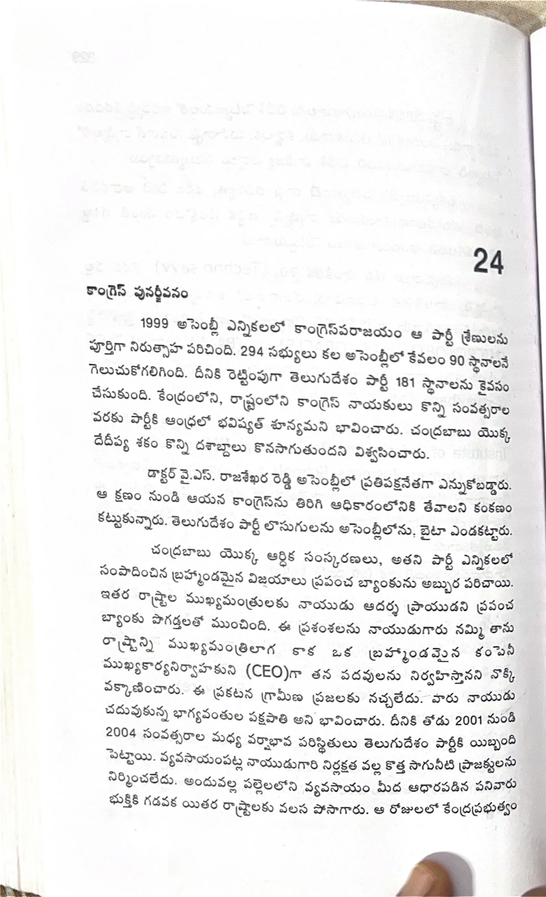

ముద్రిత పుట 330
scanతో మాన్యువల్గా ధృవీకరించిన పాఠ్యం

24 కాంగ్రెస్ పునర్జీవనం 1999 అసెంబ్లీ ఎన్నికలలో కాంగ్రెస్ పరాజయం ఆ పార్టీ శ్రేణులను పూర్తిగా నిరుత్సాహ పరిచింది. 294 సభ్యులు కల అసెంబ్లీలో కేవలం 90 స్థానాలనే గెలుచుకోగలిగింది. దీనికి రెట్టింపుగా తెలుగుదేశం పార్టీ 181 స్థానాలను కైవసం చేసుకుంది. కేంద్రంలోని, రాష్ట్రంలోని కాంగ్రెస్ నాయకులు కొన్ని సంవత్సరాల వరకు పార్టీకి ఆంధ్రలో భవిష్యత్ శూన్యమని భావించారు. చంద్రబాబు యొక్క దేదీప్య శకం కొన్ని దశాబ్దాలు కొనసాగుతుందని విశ్వసించారు. డాక్టర్ వై.ఎస్. రాజశేఖర రెడ్డి అసెంబ్లీలో ప్రతిపక్షనేతగా ఎన్నుకోబడ్డారు. ఆ క్షణం నుండి ఆయన కాంగ్రెస్ను తిరిగి అధికారంలోనికి తేవాలని కంకణం కట్టుకున్నారు. తెలుగుదేశం పార్టీ లొసుగులను అసెంబ్లీలోను, బైటా ఎండకట్టారు. చంద్రబాబు యొక్క ఆర్థిక సంస్కరణలు, అతని పార్టీ ఎన్నికలలో సంపాదించిన బ్రహ్మాండమైన విజయాలు ప్రపంచ బ్యాంకును అబ్బుర పరిచాయి. ఇతర రాష్ట్రాల ముఖ్యమంత్రులకు నాయుడు ఆదర్శ ప్రాయుడని ప్రపంచ బ్యాంకు పొగడ్తలతో ముంచింది. ఈ ప్రశంసలను నాయుడుగారు నమ్మి తాను రాష్ట్రాన్ని ముఖ్యమంత్రిలాగ కాక ఒక బ్రహ్మాండమైన కంపెనీ ముఖ్యకార్యనిర్వాహకుని (CEO)గా తన పదవులను నిర్వహిస్తానని నొక్కి వక్కాణించారు. ఈ ప్రకటన గ్రామీణ ప్రజలకు నచ్చలేదు. వారు నాయుడు చదువుకున్న భాగ్యవంతుల పక్షపాతి అని భావించారు. దీనికి తోడు 2001 నుండి 2004 సంవత్సరాల మధ్య వర్షాభావ పరిస్థితులు తెలుగుదేశం పార్టీకి యిబ్బంది పెట్టాయి. వ్యవసాయంపట్ల నాయుడుగారి నిర్లక్షత వల్ల కొత్త సాగునీటి ప్రాజెక్టులను నిర్మించలేదు. అందువల్ల పల్లెలలోని వ్యవసాయం మీద ఆధారపడిన పనివారు భుక్తికి గడవక యితర రాష్ట్రాలకు వలస పోసాగారు. ఆ రోజులలో కేంద్రప్రభుత్వం